Партнёрские навыки
У каждого пала есть партнёрский навык. Он включается по-разному: из команды, когда пал выпущен, верхом, по кнопке или на базе. Нажмите на карточку, чтобы открыть страницу пала.
 КаттиваКотопомощь🎒 вес
КаттиваКотопомощь🎒 вес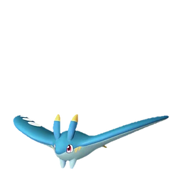
СеларайГлайдер ласкового ветра⚔️ урон💨 передвижение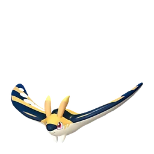
Селарай ЛаксГлайдер электрического ветра⚔️ урон💨 передвижение КремисМягкая шерсть⚔️ урон
КремисМягкая шерсть⚔️ урон Кроадзиро НоктТеневая стойка⚔️ урон💨 передвижение
Кроадзиро НоктТеневая стойка⚔️ урон💨 передвижение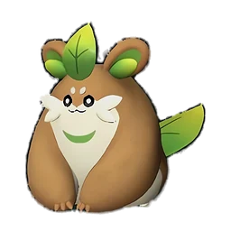
ХербилИмпульс Хербила• прочее ТифантИсцеляющий душ💚 лечение
ТифантИсцеляющий душ💚 лечение ГумоссПомощь в рубке⚔️ урон🎒 вес⛏ добыча
ГумоссПомощь в рубке⚔️ урон🎒 вес⛏ добыча ПаппирайСтарательная поддержка⚔️ урон
ПаппирайСтарательная поддержка⚔️ урон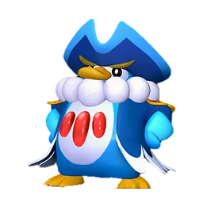
ПенкингОтважный воин морей🎁 дроп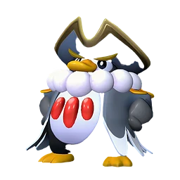
Пенкинг ЛаксНепреклонный водный генерал⚔️ урон ХукратМудрость тьмы⚔️ урон
ХукратМудрость тьмы⚔️ урон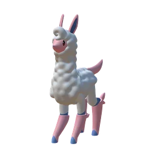
МелпакаШерсть пака-пака🛡 защита💨 передвижение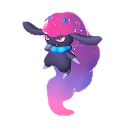
ДаэдримПогоня за мечтой⚔️ урон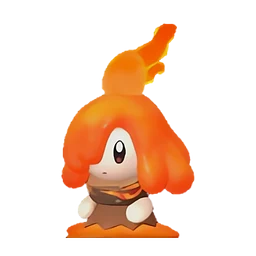
ФламбелльМагмовые слезы💚 лечение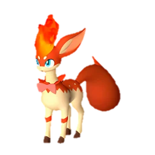
РубиМаленькие искры🛡 защита КилламариЖареный кальмар💨 передвижение
КилламариЖареный кальмар💨 передвижение Килламари ПримоМечта на сковородке💨 передвижение
Килламари ПримоМечта на сковородке💨 передвижение ФуддлерПомощь в добыче руды⚔️ урон🎒 вес⛏ добыча
ФуддлерПомощь в добыче руды⚔️ урон🎒 вес⛏ добыча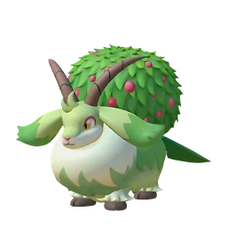
КапритиСбор ягод💚 лечение Каприти НоктСбор ядовитых желез• прочее
Каприти НоктСбор ядовитых желез• прочее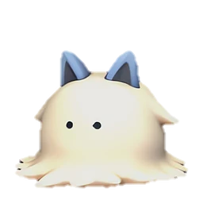
СвиМофу-мофу-мофу⚔️ урон🛡 защита ТуртаклКолючий носильщик🎒 вес⛏ добыча
ТуртаклКолючий носильщик🎒 вес⛏ добыча Туртакл ТерраСверкающий носильщик⚔️ урон🎒 вес
Туртакл ТерраСверкающий носильщик⚔️ урон🎒 вес ХангюНебесные качели💨 передвижение
ХангюНебесные качели💨 передвижение Хангю КристМорозные качели💨 передвижение
Хангю КристМорозные качели💨 передвижение СпаркитСтатическое электричество⚔️ урон✨ усиление стихии
СпаркитСтатическое электричество⚔️ урон✨ усиление стихии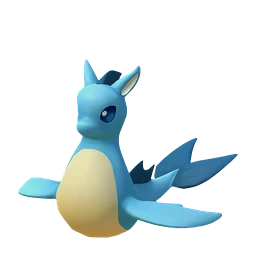
КелпсиОбливание водой⚔️ урон✨ усиление стихии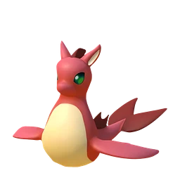
Келпси ИгнисОбливание лавой⚔️ урон✨ усиление стихии РиббаниУлыбчивая леди-кролик⚔️ урон🔨 работа
РиббаниУлыбчивая леди-кролик⚔️ урон🔨 работа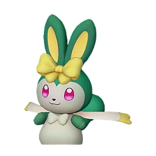
Риббани БотанДубасящий травяной кролик⚔️ урон🔨 работа ДжелиэттаДроп Джелиэтты🎁 дроп💨 передвижение
ДжелиэттаДроп Джелиэтты🎁 дроп💨 передвижение ДжелройДроп Джелроя🎁 дроп💨 передвижение
ДжелройДроп Джелроя🎁 дроп💨 передвижение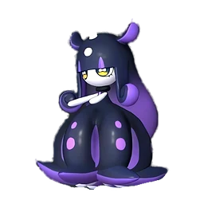
ГлуппиЛипкая принцесса• прочее Глуппи ПримоЧавкающая принцесса🛡 защита
Глуппи ПримоЧавкающая принцесса🛡 защита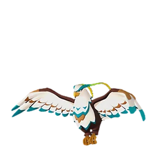
ЭрмургГлайд на Эрмурге💨 передвижение ВиспауОдержимая кошка⚔️ урон🎯 поимка
ВиспауОдержимая кошка⚔️ урон🎯 поимка ЮнивольтМолниеносный рывок⚔️ урон
ЮнивольтМолниеносный рывок⚔️ урон ГобфинАкулка-злюка⚔️ урон
ГобфинАкулка-злюка⚔️ урон Гобфин ИгнисАкулка-злюка⚔️ урон
Гобфин ИгнисАкулка-злюка⚔️ урон ЛупмунОстрые когти тьмы⚔️ урон💨 передвижение
ЛупмунОстрые когти тьмы⚔️ урон💨 передвижение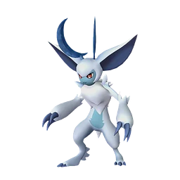
Лупмун КристОстрые когти льда⚔️ урон АрсоксСогревающее тело• прочее
АрсоксСогревающее тело• прочее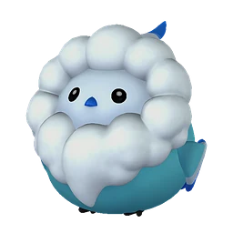
МаффлиПушистик-кругляш🎯 поимка БристлаВзгляд принцессы⚔️ урон✨ усиление стихии
БристлаВзгляд принцессы⚔️ урон✨ усиление стихии ЭлфидранДобросердечный святой дракон🎁 дроп💨 передвижение
ЭлфидранДобросердечный святой дракон🎁 дроп💨 передвижение Элфидран АкваДобросердечный водный дракон⚔️ урон🛡 защита💨 передвижение
Элфидран АкваДобросердечный водный дракон⚔️ урон🛡 защита💨 передвижение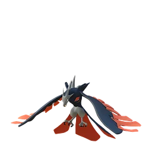
ВанвирмВоздушный налётчик⚔️ урон Ванвирм КристВоздушный налётчик⚔️ урон
Ванвирм КристВоздушный налётчик⚔️ урон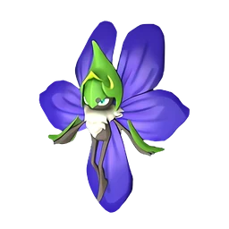
ВаэлетОчищение земли🎁 дроп✨ усиление стихии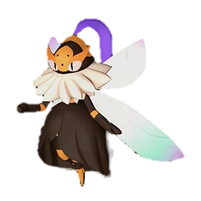
БигардРабочая пчелка• прочее ГринтэйлСияющий кошачий глаз• прочее
ГринтэйлСияющий кошачий глаз• прочее Горират ТерраМаксимальная мощь гориллы💨 передвижение
Горират ТерраМаксимальная мощь гориллы💨 передвижение Серфент ТерраПловец песков• прочее
Серфент ТерраПловец песков• прочее РобинквиллМастер стрельбы из лука⚔️ урон
РобинквиллМастер стрельбы из лука⚔️ урон Робинквилл ТерраМастер натягивания лука💨 передвижение
Робинквилл ТерраМастер натягивания лука💨 передвижение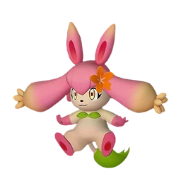
ФлопиЗаяц-помощник🎁 дроп КатрессЗловещая тёмная магия🎁 дроп🎯 поимка
КатрессЗловещая тёмная магия🎁 дроп🎯 поимка Элгрув КристУгроза вечной мерзлоты⚔️ урон
Элгрув КристУгроза вечной мерзлоты⚔️ урон ЛунарисАнтигравитация🎒 вес🎯 поимка
ЛунарисАнтигравитация🎒 вес🎯 поимка Фенглоп ЛаксГрозовое облако🎁 дроп💨 передвижение
Фенглоп ЛаксГрозовое облако🎁 дроп💨 передвижение ДиноссумЦветочный дракон🛡 защита
ДиноссумЦветочный дракон🛡 защита Диноссум ЛаксГрозоцветный дракон🛡 защита
Диноссум ЛаксГрозоцветный дракон🛡 защита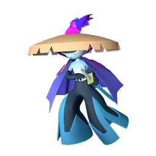
Буси НоктТёмная фиолетовая молния⚔️ урон МанчиллХолодная пасть🎒 вес
МанчиллХолодная пасть🎒 вес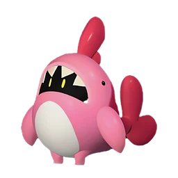
Финсайдер ИгнисПылающая комната⚔️ урон🎒 вес Петаллия ИгнисПыл духа цветов⚔️ урон💚 лечение
Петаллия ИгнисПыл духа цветов⚔️ урон💚 лечение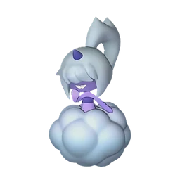
ДаззиДочь грома• прочее Даззи НоктДочь тёмного грома• прочее
Даззи НоктДочь тёмного грома• прочее ФоксайклПутеводная Аврора⚔️ урон✨ усиление стихии
ФоксайклПутеводная Аврора⚔️ урон✨ усиление стихии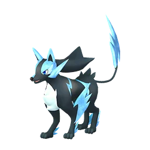
Райхаунд КристБуревой пёс🛡 защита💨 передвижение МенастингСтальной скорпион🛡 защита⛏ добыча
МенастингСтальной скорпион🛡 защита⛏ добыча Менастинг ТерраЗолотой скорпион🛡 защита⛏ добыча
Менастинг ТерраЗолотой скорпион🛡 защита⛏ добыча НидоллОбними меня⚔️ урон
НидоллОбними меня⚔️ урон Нидолл НоктОбнимаю тебя крепко⚔️ урон
Нидолл НоктОбнимаю тебя крепко⚔️ урон РейндриксПрохладное тело• прочее
РейндриксПрохладное тело• прочее Молдрон КристВладыка льда⚔️ урон
Молдрон КристВладыка льда⚔️ урон БрончерриЦветущий дракон первой любви• прочее
БрончерриЦветущий дракон первой любви• прочее Брончерри АкваЦветущий дракон чистоты• прочее
Брончерри АкваЦветущий дракон чистоты• прочее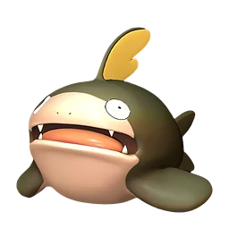
ДумадУлучшение почвы⚔️ урон Думад ГилдЗолотой урожай🎁 дроп
Думад ГилдЗолотой урожай🎁 дроп КицунСолнечный волк⚔️ урон🛡 защита
КицунСолнечный волк⚔️ урон🛡 защита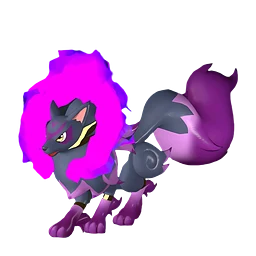
Кицун НоктМрачный волк⚔️ урон🛡 защита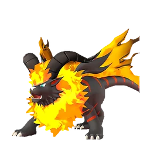
БлейзхаулЛев Преисподней✨ усиление стихии⛏ добыча Блейзхаул НоктЛев Чёрного пламени✨ усиление стихии⛏ добыча
Блейзхаул НоктЛев Чёрного пламени✨ усиление стихии⛏ добыча ВорсектЧёрная броня единства• прочее
ВорсектЧёрная броня единства• прочее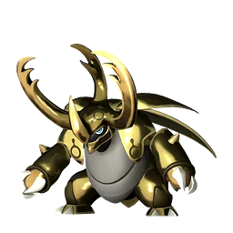
Ворсект ТерраЗолотая броня единства⚔️ урон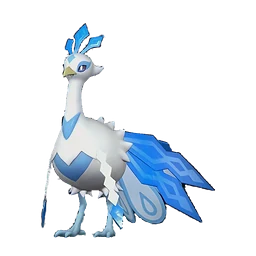
ФростплюмПавлиний выпад💨 передвижение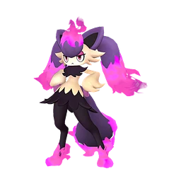
МаджексЗаклинание тёмной лисицы⚔️ урон Сибеликс ПримоМистические золотые нити🛡 защита
Сибеликс ПримоМистические золотые нити🛡 защита МараитПосланник загробного мира• прочее
МараитПосланник загробного мира• прочее ЙормунтайдМорской дракон, зовущий бурю⚔️ урон
ЙормунтайдМорской дракон, зовущий бурю⚔️ урон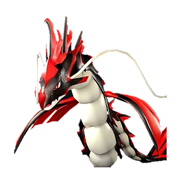
Йормунтайд ИгнисЛавовый дракон, зовущий бурю⚔️ урон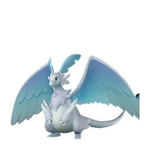
ФэскиМилосердие небесного дракона⚔️ урон БронеболПляжный катящийся мяч🛡 защита
БронеболПляжный катящийся мяч🛡 защита РептироЗверь, пожирающий руду🎒 вес⛏ добыча
РептироЗверь, пожирающий руду🎒 вес⛏ добыча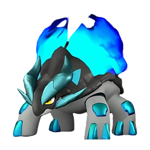
Рептиро КристЗверь, пожирающий лёд🎒 вес⛏ добыча ПиродонСила камня⚔️ урон
ПиродонСила камня⚔️ урон Пиродон КристСила кристалла• прочее
Пиродон КристСила кристалла• прочее КриолинксОхотник на драконов🎁 дроп
КриолинксОхотник на драконов🎁 дроп Криолинкс ТерраМогучая рука разрушения⚔️ урон
Криолинкс ТерраМогучая рука разрушения⚔️ урон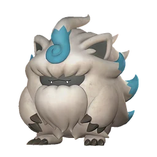
СнаглоуНевидимый глаз👁 разведка/скрытность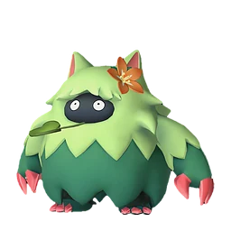
Вумпо БотанЮжный гигант⚔️ урон🛡 защита ГостлайтРасхититель могил⚔️ урон
ГостлайтРасхититель могил⚔️ урон КарнибораЦепкий язык⚔️ урон
КарнибораЦепкий язык⚔️ урон БлазамутКайзер магмы⚔️ урон🛡 защита
БлазамутКайзер магмы⚔️ урон🛡 защита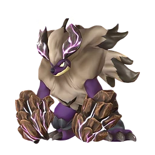
Блазамут РюКайзер драконов⚔️ урон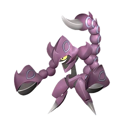
СкорпиоНеядовитый скорпион⚔️ урон Тетроис ПримоКамневал - Древняя черепаха• прочее
Тетроис ПримоКамневал - Древняя черепаха• прочее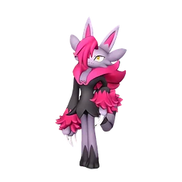
НяфияКошачий обстрел⚔️ урон ЗеноведаНеизвестный захватчик⚔️ урон
ЗеноведаНеизвестный захватчик⚔️ урон ЗеногардНеизвестный нарушитель⚔️ урон
ЗеногардНеизвестный нарушитель⚔️ урон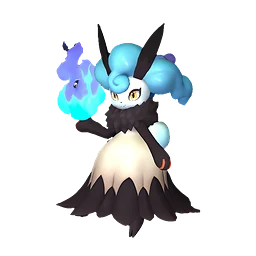
НайтмериПризрачный кролик-похититель душ• прочее Найтмери БотанПризрачный кролик-пленитель душ🛡 защита
Найтмери БотанПризрачный кролик-пленитель душ🛡 защита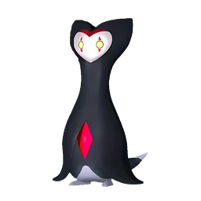
ОмаскулТанец масок⭐ опыт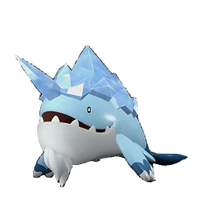
ВаласкаХолодный китоход💨 передвижение Валаска ИгнисТёплый китоход💨 передвижение
Валаска ИгнисТёплый китоход💨 передвижение ВердашЗвёздный акробат равнин💨 передвижение
ВердашЗвёздный акробат равнин💨 передвижение СплаттеринаКлинок безумной любви🎁 дроп
СплаттеринаКлинок безумной любви🎁 дроп БуллдосАура ёкодзуна⚔️ урон🛡 защита
БуллдосАура ёкодзуна⚔️ урон🛡 защита СелесдирОчищающее благословение⚔️ урон💚 лечение💨 передвижение
СелесдирОчищающее благословение⚔️ урон💚 лечение💨 передвижение Селесдир НоктБлагословение хаоса⚔️ урон
Селесдир НоктБлагословение хаоса⚔️ урон СилвегисЩит Эгиды🛡 защита
СилвегисЩит Эгиды🛡 защита ВалентейлКошка-тянучка💨 передвижение
ВалентейлКошка-тянучка💨 передвижение СнокДэн-дэн батарея⚔️ урон
СнокДэн-дэн батарея⚔️ урон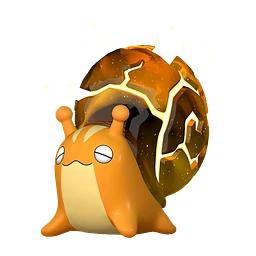
Снок ТерраДон-дон панцирь⚔️ урон🛡 защита СуффлинФея одуванчиков🎯 поимка
СуффлинФея одуванчиков🎯 поимка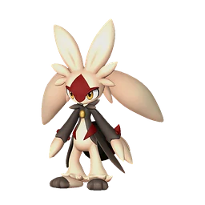
ЛапиронЗемля - мой друг🛡 защита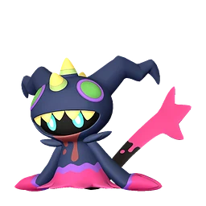
ХудлПритаившийся в пустоте⚔️ урон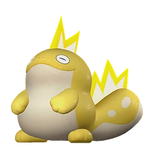
СлоуваттПереключатель расслабления⚔️ урон БакемиУлыбчивая нежить• прочее
БакемиУлыбчивая нежить• прочее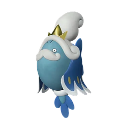
СолмораХаризматичная рыбка• прочее Солмора ЛаксПлазменная рыбка⚔️ урон
Солмора ЛаксПлазменная рыбка⚔️ урон НемофиДлиннорукавная поддержка• прочее
НемофиДлиннорукавная поддержка• прочее ТропикауТанец цветов🛡 защита
ТропикауТанец цветов🛡 защита ФлараклПылающее будущее⚔️ урон
ФлараклПылающее будущее⚔️ урон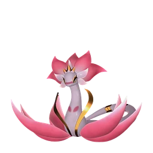
ОфидияВеличественный туман⚔️ урон ДупинТрик-шоу Рапи-Рапи⚔️ урон💚 лечение
ДупинТрик-шоу Рапи-Рапи⚔️ урон💚 лечение РоуджейТёмная чудовищная птица⚔️ урон
РоуджейТёмная чудовищная птица⚔️ урон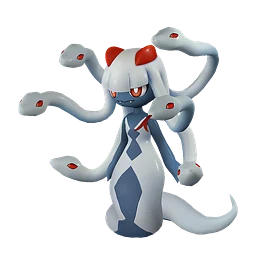
МедунаЗмеиная мудрость⚔️ уронЛюменЗачарованный фонарь⚔️ уронВистеллаСкрытая тёмная энергия🛡 защита СоленнаНезапятнанная леди-одиночка⚔️ уронРэндзишиМасштабная схватка⚔️ уронАэгидронНесокрушимый крепостной дракон⚔️ уронОрсеркСвирепый громовой дракон⚔️ урон🛡 защитаФалерисХищник пламени✨ усиление стихии⛏ добыча
СоленнаНезапятнанная леди-одиночка⚔️ уронРэндзишиМасштабная схватка⚔️ уронАэгидронНесокрушимый крепостной дракон⚔️ уронОрсеркСвирепый громовой дракон⚔️ урон🛡 защитаФалерисХищник пламени✨ усиление стихии⛏ добыча Фалерис АкваХищник прилива🎁 дропСильвансХранитель спор⚔️ урон
Фалерис АкваХищник прилива🎁 дропСильвансХранитель спор⚔️ урон ДандилордСтраж тумана⚔️ урон
ДандилордСтраж тумана⚔️ урон ЗенолордМетеоритные крылья⚔️ урон
ЗенолордМетеоритные крылья⚔️ урон Пещерная летучая мышьПоддержка летучих мышей🎁 дроп
Пещерная летучая мышьПоддержка летучих мышей🎁 дроп Демонический глазДемоническое зрение⚔️ урон
Демонический глазДемоническое зрение⚔️ урон Зачарованный мечЗачарование🎁 дроп
Зачарованный мечЗачарование🎁 дроп Светящаяся летучая мышьПоддержка летучих мышей🎁 дропЧикипиЯйцеклад• прочееМауКошке — золотая монета• прочее
Светящаяся летучая мышьПоддержка летучих мышей🎁 дропЧикипиЯйцеклад• прочееМауКошке — золотая монета• прочее Мау КристЛедяной сюрприз• прочее
Мау КристЛедяной сюрприз• прочее ФелбэтКража жизни⚔️ урон💚 лечение
ФелбэтКража жизни⚔️ урон💚 лечение ЭлизабиВоля королевы• прочее
ЭлизабиВоля королевы• прочее ЛовандерИссушение сердца⚔️ урон💚 лечение
ЛовандерИссушение сердца⚔️ урон💚 лечение ЛифанПолная самоотдача⚔️ урон🛡 защитаЙомираС того света• прочее
ЛифанПолная самоотдача⚔️ урон🛡 защитаЙомираС того света• прочее МимидогВзлом замков👁 разведка/скрытность
МимидогВзлом замков👁 разведка/скрытность Астралим-• прочее
Астралим-• прочее КингпакаКороль мускулов🛡 защита💨 передвижениеКингпака КристХолоднокровный король🛡 защита💨 передвижениеРашоаТвердоголовый⛏ добычаИктирдирХранитель леса💨 передвижение⛏ добычаИктирдир ТэрраХранитель золотого леса💨 передвижениеДайэхаулОседлать Дайэхаула💨 передвижение
КингпакаКороль мускулов🛡 защита💨 передвижениеКингпака КристХолоднокровный король🛡 защита💨 передвижениеРашоаТвердоголовый⛏ добычаИктирдирХранитель леса💨 передвижение⛏ добычаИктирдир ТэрраХранитель золотого леса💨 передвижениеДайэхаулОседлать Дайэхаула💨 передвижение СвипаКороль мофу-мофу🛡 защитаАзуробТанец парящей воды⚔️ урон
СвипаКороль мофу-мофу🛡 защитаАзуробТанец парящей воды⚔️ урон Азуроб КристТанец парящего льда⚔️ уронНайтвингСпутник в путешествии• прочее
Азуроб КристТанец парящего льда⚔️ уронНайтвингСпутник в путешествии• прочее Юнивольт КристБуря ледяных лепестков⚔️ урон✨ усиление стихииТарантриссСети Тарантрисс💨 передвижение
Юнивольт КристБуря ледяных лепестков⚔️ урон✨ усиление стихииТарантриссСети Тарантрисс💨 передвижение ПолапапНаездник снежной горы💨 передвижение
ПолапапНаездник снежной горы💨 передвижение Полапап ТерраСкользящий снежной горы💨 передвижениеСерфентПловец морей• прочееХэлзефирКрылья Преисподней⚔️ урон
Полапап ТерраСкользящий снежной горы💨 передвижениеСерфентПловец морей• прочееХэлзефирКрылья Преисподней⚔️ урон Хэлзефир ЛаксГромовые крылья⚔️ урон
Хэлзефир ЛаксГромовые крылья⚔️ урон ФенглопВетер и тучи💨 передвижение
ФенглопВетер и тучи💨 передвижение МамморестГеокрушитель⛏ добычаМамморест КристКриокрушитель⛏ добыча
МамморестГеокрушитель⛏ добычаМамморест КристКриокрушитель⛏ добыча ПиринКрасный Заяц⚔️ уронПирин НоктЧёрный Заяц⚔️ уронРелаксаурусГолодная ракета⚔️ урон🎒 вес
ПиринКрасный Заяц⚔️ уронПирин НоктЧёрный Заяц⚔️ уронРелаксаурусГолодная ракета⚔️ урон🎒 вес Релаксаурус ЛаксРакетная вечеринка⚔️ урон🎒 вес
Релаксаурус ЛаксРакетная вечеринка⚔️ урон🎒 вес РайбердГром с неба⚔️ урон
РайбердГром с неба⚔️ урон Райберд КристНебесный град⚔️ урон
Райберд КристНебесный град⚔️ урон ГанглерПроводник ночной тьмы✨ усиление стихии
ГанглерПроводник ночной тьмы✨ усиление стихии Ганглер ИгнисЗнаменитый шеф морских глубин✨ усиление стихииРайхаундГрозовой пёс✨ усиление стихии💨 передвижение
Ганглер ИгнисЗнаменитый шеф морских глубин✨ усиление стихииРайхаундГрозовой пёс✨ усиление стихии💨 передвижение МоссандаПанда-гранатомётчик⚔️ урон🎒 вес
МоссандаПанда-гранатомётчик⚔️ урон🎒 вес Моссанда ЛаксПанда-гранатомётчик⚔️ урон🎒 вес
Моссанда ЛаксПанда-гранатомётчик⚔️ урон🎒 вес ЧиллетВерткая ласка⚔️ урон
ЧиллетВерткая ласка⚔️ урон Чиллет ИгнисИскрящаяся ласка⚔️ урон
Чиллет ИгнисИскрящаяся ласка⚔️ урон РагнахавкПламенные крылья⚔️ уронМолдронВладыка магмы⚔️ урон
РагнахавкПламенные крылья⚔️ уронМолдронВладыка магмы⚔️ урон ПалумбаСамба-шаг💨 передвижениеБралохаТёплый денёк• прочее
ПалумбаСамба-шаг💨 передвижениеБралохаТёплый денёк• прочее ШрумерСпоры роста• прочее
ШрумерСпоры роста• прочее Шрумер НоктДымящиеся споры• прочее
Шрумер НоктДымящиеся споры• прочее СудзакуОгненные крылья✨ усиление стихииСудзаку АкваВодные крылья✨ усиление стихииДаземуПесчаный рывок💨 передвижение
СудзакуОгненные крылья✨ усиление стихииСудзаку АкваВодные крылья✨ усиление стихииДаземуПесчаный рывок💨 передвижение Фэски БотанМилосердие травяного дракона⚔️ урон
Фэски БотанМилосердие травяного дракона⚔️ урон ЯкумоРыбак рыбака видит издалека• прочееСтаррионНочной танцор💨 передвижение
ЯкумоРыбак рыбака видит издалека• прочееСтаррионНочной танцор💨 передвижение Старрион ПримоТанцор света💨 передвижениеВумпоГигант снежных гор• прочее
Старрион ПримоТанцор света💨 передвижениеВумпоГигант снежных гор• прочее ДуалитЛесной лазер• прочее
ДуалитЛесной лазер• прочее Дуалит НоктЛазер порчи• прочее
Дуалит НоктЛазер порчи• прочее ТетроисКамнепад - Древняя черепаха• прочееГилдейнБлагословение песчаной бури⚔️ урон✨ усиление стихии
ТетроисКамнепад - Древняя черепаха• прочееГилдейнБлагословение песчаной бури⚔️ урон✨ усиление стихии АстегонДракон в чёрных доспехах⚔️ урон⛏ добыча
АстегонДракон в чёрных доспехах⚔️ урон⛏ добыча АзурмейнПлазморывок💨 передвижение
АзурмейнПлазморывок💨 передвижение АйдролонСвободный крылатый дракон⚔️ урон💨 передвижение
АйдролонСвободный крылатый дракон⚔️ урон💨 передвижение Айдролон ИгнисГневный крылатый дракон⚔️ урон💨 передвижение
Айдролон ИгнисГневный крылатый дракон⚔️ урон💨 передвижение ДинамоффЭлектростимулированная инкубация💨 передвижение
ДинамоффЭлектростимулированная инкубация💨 передвижение ГриззболтЖёлтый бронетанк⚔️ урон🎒 вес
ГриззболтЖёлтый бронетанк⚔️ урон🎒 вес ШэдоубикМодифицированные гены⚔️ урон💨 передвижение
ШэдоубикМодифицированные гены⚔️ урон💨 передвижение СеленаЗвёздная тьма⚔️ уронБастигорСокрушительная буря⚔️ урон
СеленаЗвёздная тьма⚔️ уронБастигорСокрушительная буря⚔️ урон ШаолонгВластелин Лазурного неба⚔️ урон
ШаолонгВластелин Лазурного неба⚔️ урон ХарталисСвященный барьер💨 передвижениеПаладиусНебесный святой рыцарь💨 передвижениеНекромусТёмный рыцарь бездны💨 передвижение
ХарталисСвященный барьер💨 передвижениеПаладиусНебесный святой рыцарь💨 передвижениеНекромусТёмный рыцарь бездны💨 передвижение ФросталлионЛедяной Пегас⚔️ урон✨ усиление стихииФросталлион НоктТёмный Пегас⚔️ урон✨ усиление стихииНептилиусВластелин океана⚔️ уронДжетрагонВоздушные ракеты⚔️ урон🎒 вес
ФросталлионЛедяной Пегас⚔️ урон✨ усиление стихииФросталлион НоктТёмный Пегас⚔️ урон✨ усиление стихииНептилиусВластелин океана⚔️ уронДжетрагонВоздушные ракеты⚔️ урон🎒 вес ПанталусХранитель эха⚔️ урон
ПанталусХранитель эха⚔️ урон Синий слизеньТело слизня• прочее
Синий слизеньТело слизня• прочее Зеленый слизеньТело слизня• прочее
Зеленый слизеньТело слизня• прочее Светящийся слизеньТело слизня• прочее
Светящийся слизеньТело слизня• прочее Фиолетовый слизеньТело слизня• прочее
Фиолетовый слизеньТело слизня• прочее Радужный слизеньТело слизня• прочееКрасный слизеньТело слизня• прочееЛамболлПуховый щит🛡 защита
Радужный слизеньТело слизня• прочееКрасный слизеньТело слизня• прочееЛамболлПуховый щит🛡 защита ЛифманкЛифманк Рекойл⚔️ урон
ЛифманкЛифманк Рекойл⚔️ урон КамоноскеСерфинг-слэм⚔️ уронКамоноске ИгнисПламенный натиск⚔️ урон
КамоноскеСерфинг-слэм⚔️ уронКамоноске ИгнисПламенный натиск⚔️ урон КроадзироПодготовка к прыжку⚔️ урон💨 передвижениеДжолтхогЭлектрошоковая бомба⚔️ урон✨ усиление стихии
КроадзироПодготовка к прыжку⚔️ урон💨 передвижениеДжолтхогЭлектрошоковая бомба⚔️ урон✨ усиление стихии Джолтхог КристЛедяная бомба⚔️ урон✨ усиление стихии
Джолтхог КристЛедяная бомба⚔️ урон✨ усиление стихии ДепрессоДоза кофеина💨 передвижение🔨 работа
ДепрессоДоза кофеина💨 передвижение🔨 работа ПенгуллетПенгуллетомёт⚔️ уронПенгуллет ЛаксПенгуллет-Лаксомёт⚔️ уронТанзиВеселая стрельба⚔️ урон
ПенгуллетПенгуллетомёт⚔️ уронПенгуллет ЛаксПенгуллет-Лаксомёт⚔️ уронТанзиВеселая стрельба⚔️ урон Танзи ИгнисВесёлая пальба⚔️ урон
Танзи ИгнисВесёлая пальба⚔️ урон НоксКудэрэ👁 разведка/скрытность
НоксКудэрэ👁 разведка/скрытность ФокспарксПламенные объятия⚔️ урон
ФокспарксПламенные объятия⚔️ урон Фокспаркс КристМорозные объятия⚔️ уронТомбатЧутьё Бакэнэко👁 разведка/скрытностьТокотокоЯйцемёт⚔️ уронКогнитоНочная чудовищная птица• прочее
Фокспаркс КристМорозные объятия⚔️ уронТомбатЧутьё Бакэнэко👁 разведка/скрытностьТокотокоЯйцемёт⚔️ уронКогнитоНочная чудовищная птица• прочее СиннамосЗагадочные чешуйки🔨 работаЛизпанкНевидимость• прочееЛизпанк ИгнисНевидимость• прочее
СиннамосЗагадочные чешуйки🔨 работаЛизпанкНевидимость• прочееЛизпанк ИгнисНевидимость• прочее ГориратМаксимальный режим гориллы⚔️ урон
ГориратМаксимальный режим гориллы⚔️ урон ВиксенГоспожа лисица⚔️ урон✨ усиление стихии
ВиксенГоспожа лисица⚔️ урон✨ усиление стихии Виксен НоктГоспожа тёмная лисица⚔️ урон✨ усиление стихии
Виксен НоктГоспожа тёмная лисица⚔️ урон✨ усиление стихии ЭлгрувПриродная угроза⚔️ урон
ЭлгрувПриродная угроза⚔️ урон БусиФиолетовая молния• прочееФинсайдерВодяной триггер⚔️ урон✨ усиление стихииПеталлияБлагословение духа цветов💚 лечение
БусиФиолетовая молния• прочееФинсайдерВодяной триггер⚔️ урон✨ усиление стихииПеталлияБлагословение духа цветов💚 лечение ИнсинерамКогтистый охотник пламени• прочееИнсинерам НоктКогтистый охотник тьмы• прочееДигтосДробящий бур⛏ добычаСибеликсМистический шёлковый покров• прочееАйселинВедьминский холод⚔️ урон✨ усиление стихии
ИнсинерамКогтистый охотник пламени• прочееИнсинерам НоктКогтистый охотник тьмы• прочееДигтосДробящий бур⛏ добычаСибеликсМистический шёлковый покров• прочееАйселинВедьминский холод⚔️ урон✨ усиление стихии СкатлассРвать плоть, ломать кости• прочее
СкатлассРвать плоть, ломать кости• прочее Скатласс ИгнисЖечь плоть, разрубать кости• прочее
Скатласс ИгнисЖечь плоть, разрубать кости• прочее АнубисХранитель пустыни⚔️ урон
АнубисХранитель пустыни⚔️ урон Скорпио ЛаксНизкочастотный скорпион⚔️ урон
Скорпио ЛаксНизкочастотный скорпион⚔️ урон СмокиВерный пёс Смоки⛏ добыча👁 разведка/скрытность
СмокиВерный пёс Смоки⛏ добыча👁 разведка/скрытность ВанфуМолитва возвращения• прочееТеранайтРежим стального стража⚔️ урон🛡 защитаТеранайт ИгнисРежим железного стража⚔️ урон🛡 защита
ВанфуМолитва возвращения• прочееТеранайтРежим стального стража⚔️ урон🛡 защитаТеранайт ИгнисРежим железного стража⚔️ урон🛡 защита ЛилинБогиня урожая💚 лечениеЛилин НоктБогиня таинственного света💚 лечение
ЛилинБогиня урожая💚 лечениеЛилин НоктБогиня таинственного света💚 лечение БэллануарОко кошмара• прочее
БэллануарОко кошмара• прочее Бэллануар ЛибероКошмарный взгляд• прочее
Бэллануар ЛибероКошмарный взгляд• прочее Глаз КтулхуРывок глаза Ктулху• прочее
Глаз КтулхуРывок глаза Ктулху• прочее ВиксиКопай здесь, кон-кон!• прочееКловиСчастливый клевер• прочееВулипопКэнди-поп• прочее
ВиксиКопай здесь, кон-кон!• прочееКловиСчастливый клевер• прочееВулипопКэнди-поп• прочее Вулипоп ТерраГорький Поп• прочееМоззаринаДойка• прочее
Вулипоп ТерраГорький Поп• прочееМоззаринаДойка• прочее АмионаМагическая двойная сила• прочееПуффольтИскрящийся усилитель• прочееКатресс ИгнисПылкое тёмное искусство• прочее
АмионаМагическая двойная сила• прочееПуффольтИскрящийся усилитель• прочееКатресс ИгнисПылкое тёмное искусство• прочее НежноцветЦветочное усиление💨 передвижение
НежноцветЦветочное усиление💨 передвижение СехметИмператрица пустыни💨 передвижение🔨 работаПрунелияМолитва об урожае• прочее
СехметИмператрица пустыни💨 передвижение🔨 работаПрунелияМолитва об урожае• прочее Смоки КристВерный пёс Смоки Крист🔨 работа
Смоки КристВерный пёс Смоки Крист🔨 работа МикораЧарующие споры• прочее
МикораЧарующие споры• прочееНичего не найдено. Попробуйте другое имя или снимите фильтр.